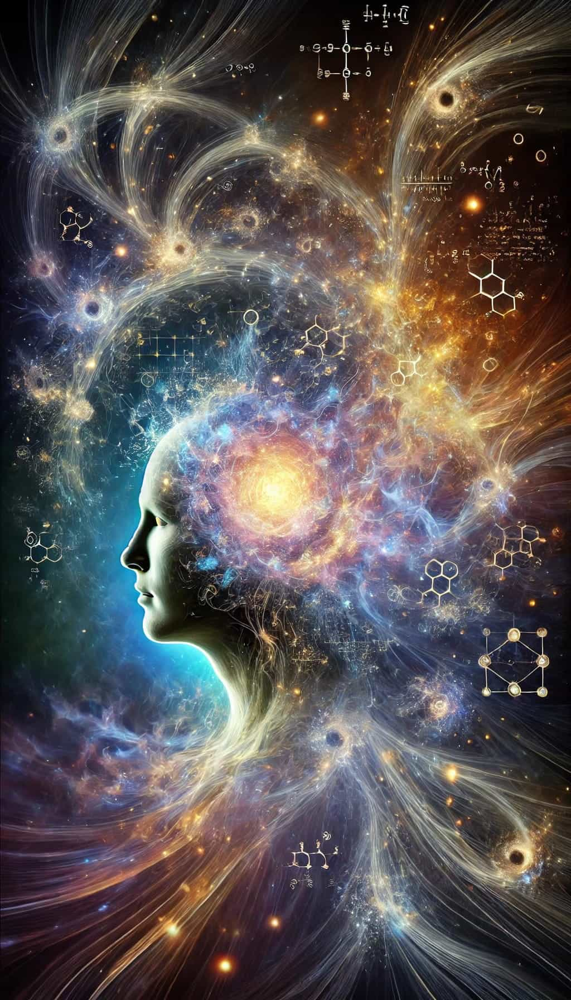

The Space of Becoming: Existential Incompleteness
Abstract
The Space of Becoming models adaptive experience as an interval of predictive performance with two edges. Below the lower edge a system does no better than a matched random baseline, so nothing it produces counts as prediction. At the upper edge the response law leaves no room to improve, so no error signal remains and revision stops. Adaptation happens strictly between them. On this reading the limits on self-prediction supply the gap that makes learning possible, and the edges are registered per task and score rather than being constants shared by every system.
The Space in Plain Terms
A tennis player who wins every point against a much weaker opponent learns nothing that day. A player who loses every point against a much stronger one learns nothing either, because the losses carry no usable information about what to change. Improvement happens against an opponent who is beatable and not easily, where roughly every other point turns on something the player could have done differently.
That band has two edges and both matter. Below the lower edge a system does no better than guessing, so nothing it does counts as anticipation and nothing it records counts as a lesson. At the upper edge there is no error left, so there is nothing to correct and the system stops changing. Adaptation happens strictly between the edges, and it needs both of them.
This is why the impossibility of perfect self-prediction is not bad news for a mind. A system that could forecast itself exactly would sit at the upper edge permanently, holding a complete and final account of itself with nothing left to revise. The gap between what a system expects of itself and what it turns out to do is the same gap that lets it become something else.
One caution about the edges. They are set per task and per measure, so a system can be inside the band for one job and outside it for another. There is no single interval that every system shares.
Introduction
The Space of Becoming framework treats uncertainty as a necessary condition for adaptive conscious experience. Consciousness is modeled as a balancing process between prediction and validation. As systems forecast future states, they encounter differences between expectation and outcome. These differences support learning, model update, and adaptation.
Guaranteed perfect self-prediction would remove the novelty and update pressure needed for adaptive becoming. Complete chaos would remove the stable structure needed for prediction at all. Consciousness therefore operates between these extremes, in a region where prediction is possible but incomplete.
1. The Necessity of Incompleteness
1.1 Self-Referential Systems and the Limits of Self-Knowledge
In any system that attempts to model itself, inherent limitations arise. The logic of self-reference blocks complete self-knowledge in two separate ways. A description required to contain its own value as a literal part cannot exist, since a finite description is larger than any proper part of itself. And within a class of predictors rich enough to build a system that acts against its own forecast, no predictor is correct across that class. Far from being a defect, this fundamental incompleteness provides the dynamism essential for conscious experience.
1.2 Inherent Dynamism and Adaptation
The unavoidable gaps in self-knowledge promote continuous adaptation. Predictive accounts of the brain describe the same arrangement, with expectations compared against incoming signals and the mismatch driving revision (Rao and Ballard 1999; Friston 2010; Clark 2013). Vygotsky (1978) named the pedagogical version: learning happens in the zone between what a learner can already do and what they cannot do at all. Kauffman (1993) argued that adaptive systems in general sit between frozen order and disorder, which is the same interval described in different units.
2. The Dynamic Engine of Consciousness
At the core of conscious experience lie two intertwined forces:
- Prediction Drive: The intrinsic urge to anticipate future states based on past experiences.
- Uncertainty Generation: The natural byproduct of prediction limits, continually introducing novelty and fostering adaptation.
The Logical Model
The account is logical rather than empirical. A system’s attempt to predict its own state creates gaps - gaps that are indispensable for ongoing adaptation and the evolution of consciousness. This dynamic balance between prediction and uncertainty is what sustains both stability and growth.
3. The Self-Referential Paradox and Consciousness Bounds
The Paradox of Accurate Prediction
Forecasting every detail of one’s own state is self-defeating in a precise sense. A system that receives a forecast about itself can act against it, and no predictor in its class is correct about every such system. Some degree of uncertainty is therefore both unavoidable and necessary for an evolving consciousness.
Consciousness Limits
Conscious experience flourishes within a narrow band of predictive accuracy. Insufficient accuracy results in chaotic, unstructured experience, while overly precise prediction removes the uncertainty necessary for adaptation. Hence, maintaining a balanced level of prediction is critical to sustain consciousness.

Universe 00110000
4. Embracing Uncertainty: The Space of Becoming
The Space of Becoming is defined as the conceptual domain where the divergence between expectation and reality births new possibilities. Within this domain, the tension between what is predicted and what actually transpires fuels the evolution of conscious experience.
This framework posits that the pursuit of absolute certainty paradoxically gives rise to new uncertainties, creating a creative loop fundamental to the nature of consciousness.
5. Mathematical Boundaries of the Space of Becoming
We mathematically characterize the Space of Becoming as a bounded region of predictive accuracy within which consciousness can thrive. This approach is less about quantifying consciousness in totality and more about establishing the necessary conditions for its existence.
5.1. The Bounded Space of Consciousness
The Space of Becoming is defined by a bounded interval of predictive performance PP(t):
α < PP(t) < β < 1
Where:
- PP(t): Predictive performance of the system at time
t - α: the performance of the matched random baseline for the registered task; at or below it the system does no better than chance.
- β: the ceiling set by the excitation floor of the system’s response law; it is approached asymptotically and not reached at any finite complexity.
- αSPAP: The class-relative self-prediction coherence boundary for a registered task and score, which guaranteed perfect self-prediction cannot reach. Its placement relative to β follows only when a bridge registers the same system, task, score, and window.
5.2. Boundary Conditions
These boundaries represent critical thresholds:
- At PP(t) ≤ α: The system's predictive power is too weak, leading to disordered experience.
- At PP(t) ≥ β: The system approaches predictive stasis and increasing resource costs, reducing the uncertainty required for learning and adaptation.
- Within (α, β): A workable balance is maintained, allowing recurring patterns and flexible update from new information.
5.3. Properties of the Space
The Space of Becoming exhibits several key properties:
- Boundedness: Conscious experience is inherently limited by both minimum and maximum predictive thresholds.
- Dynamic Stability: Within these bounds, systems sustain the necessary balance between order and unpredictability to foster adaptation.
The interval is registered for a task, a score, and an evaluation window. Two systems on different tasks have different edges, and no universal interval is claimed.
6. Conclusion
The Space of Becoming presents a comprehensive perspective on consciousness by emphasizing the vital interplay between prediction and uncertainty. The limits on self-prediction supply the error signal that adaptation runs on, which is why they read as conditions rather than defects.
This model suggests that being conscious is about navigating the dynamic and ever-evolving landscape of uncertainty. It is within the process of adapting to the unexpected, learning from the gaps in our predictions, and embracing the inherent incompleteness of our self-understanding that consciousness flourishes, becoming.
References
- Clark, Andy. "Whatever Next? Predictive Brains, Situated Agents, and the Future of Cognitive Science." Behavioral and Brain Sciences 36, no. 3, 2013, 181–204.
- Friston, Karl. "The Free-Energy Principle: A Unified Brain Theory?" Nature Reviews Neuroscience 11, no. 2, 2010, 127–138.
- Kauffman, Stuart A. The Origins of Order: Self-Organization and Selection in Evolution. Oxford University Press, 1993.
- Rao, Rajesh P. N., and Dana H. Ballard. "Predictive Coding in the Visual Cortex: A Functional Interpretation of Some Extra-Classical Receptive-Field Effects." Nature Neuroscience 2, no. 1, 1999, 79–87.
- Vygotsky, L. S. Mind in Society: The Development of Higher Psychological Processes. Edited by Michael Cole et al., Harvard University Press, 1978.